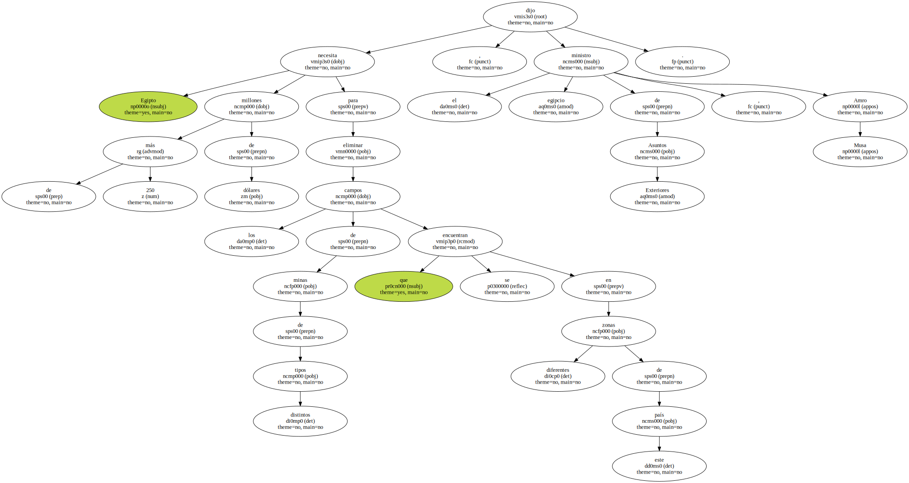
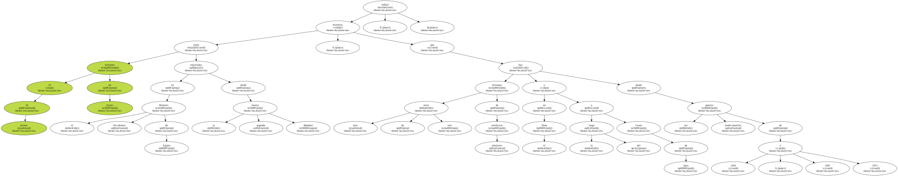
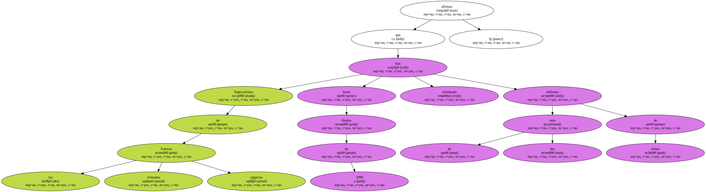

Egipto necesita más de 250 millones de dólares para eliminar los campos de minas de distintos tipos que se encuentran en diferentes zonas de este país , dijo el ministro egipcio de Asuntos Exteriores , Amro Musa.
Al menos 23 millones de minas están enterradas en el Desierto Occidental de Egipto desde la segunda Guerra Mundial , mientras que hay más de otros tres millones de artefactos similares en el Sinaí y a lo largo del Canal de Suez desde las guerras árabe-israelíes de 1956 , 1967 y 1973 , señaló.
Las afirmaciones de Musa , a quien cita hoy , lunes , la prensa local , coinciden con la presencia estos días en Egipto de una delegación de especialistas de las Naciones Unidas para tratar con las autoridades de este país sobre las posibilidades de eliminar esos artefactos en el territorio egipcio.

" La ayuda que nos han enviado la comunidad internacional y los países involucrados en la guerra de Al Alamin , en el Desierto Occidental , ( Gran Bretaña , Alemania e Italia ) es muy limitada " , dijo Musa.

Especialistas de las Fuerzas Armadas egipcias afirman que hasta finales de 1999 han eliminado más de dos millones de minas.
